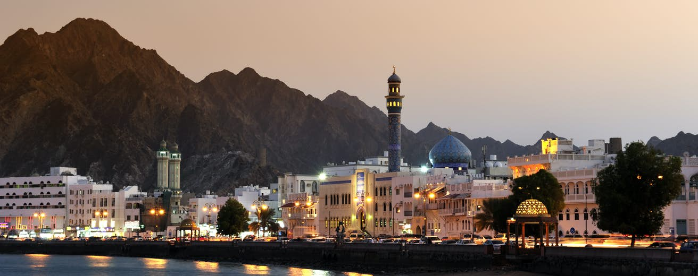

| Muscat  | |
|---|---|
Here we add some sample contentNote: This content is copied from ministry website.The Sultanate shares a number of land borders with other countries, some of which are: Alwajajah is the border with the Emirate of Dubai in The United Arab Emirates Wadi Al Jizi is the border with the Emirate of Abu Dhabi (Al Ain) in The United Arab Emirates Hafit is the border with the Emirate of Abu Dhabi (Al Ain) in The United Arab Emirates Khatmat Milaha is the border with the Emirate of Sharjah in The United Arab Emirates Tibat is the border between Musandam Governorate and the Emirate of Ras Al Khaimah in The United Arab Emirates AL Mazunah is the border with the Arab Republic of Yemen |